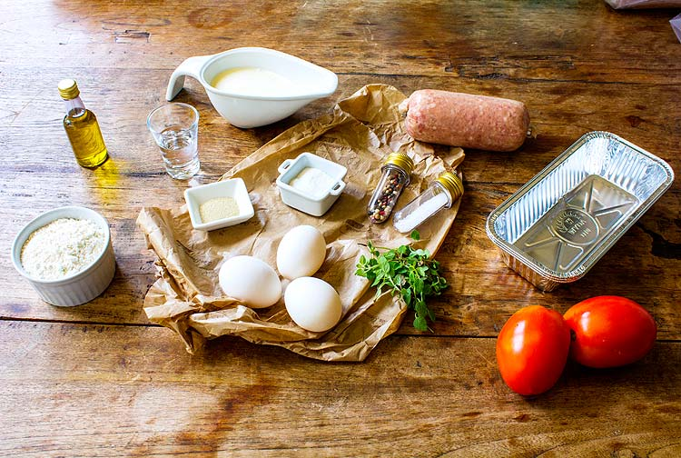

Minhas Receitas
- Receita de bolo
- Receita de Pizza
- Misture o fermento, o sal e o açúcar em um pouco de água morna, até que o fermento esteja completamente dissolvido.
- Em seguida, adicione metade da medida de farinha de trigo, o óleo e mexa até criar uma consistência pastosa.
- Acrescente o restante da farinha de trigo, a pinga, a água morna e misture bem.
- Assim que a massa desgrudar das mãos, deixe crescer por 30 minutos.
- Abra os discos, fure a massa com um garfo e pincele o molho.
- Leve ao forno médio (180° C), preaquecido, por 15 minutos.
- Receita de Pudim